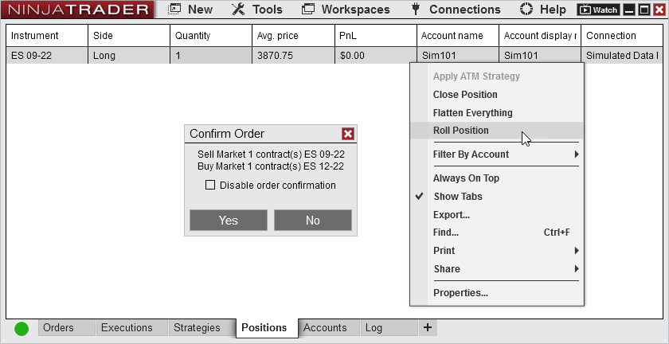
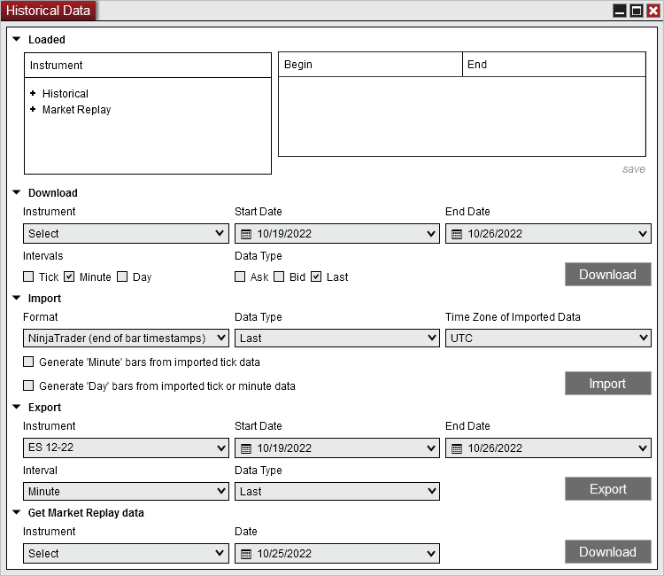
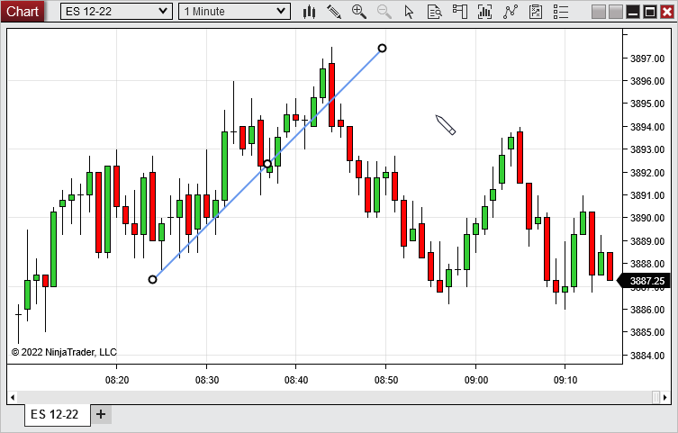
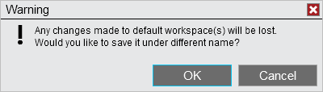
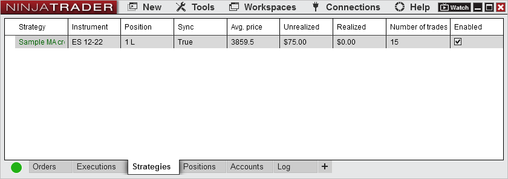

|
<< Click to Display Table of Contents >> 8.0.27.1 |


|
8.0.27.1
|
<< Click to Display Table of Contents >> 8.0.27.1 |
|
Attention 32-Bit Users: •64-bit has become the standard for applications in the Windows environment •As we continue to modernize our desktop platform and clearing up performance related confusions around 32 vs 64 bit NinjaTrader Desktop usage •NinjaTrader 8.0.27.0 will be solely a 64-bit Windows application, this means the installation directory will change from C:\Program Files (x86) to C:\Program Files •To initiate the update simply follow the installer and restart the PC. |
8.0.27.1 Release Date
December 19, 2022
Issue # |
Status |
Category |
Comments |
15439 |
Fixed |
Control Center |
Email to support could fail |
15466 |
Fixed |
Options Chain |
Options did not display |
15526 |
Fixed |
Interactive Brokers, Charts |
There was a gap of data on charts from when connecting |
15527 |
Fixed |
NinjaScript |
Resolved a scenario where importing a script resulted in an error |
8.0.27.0 Release Date
November 29, 2022
Features |
SQLite Database technology Database Feature #15258
We have updated our core internal database technology from the deprecated Microsoft SQL CE to SQLite. Supported / documented NinjaScript code will not be impacted by this change; however if you have specifically developed your Add-On to call or interact with the Microsoft SQL CE database you should review and update code for compatibility. |
Added ability to roll positions from Control Center position grid Orders, Position Display Feature #14350

On the Positions tab of the Control Center you can now right click on Futures position and select Roll Position. This will send a Market order to exit the position in the current contract month and send another Market order in the next contract month to roll your position. |
Historical Data window tabs unified and displays prior to connecting to Playback Historical Data Window, Playback Feature #15305

The Historical Data Window has now been unified into a single tab for simplicity. Now you can view what data is already loaded while deciding what data to download. Additionally, the Historical Data Window will now appear before connecting to Playback. This will enable you to view what Market Replay data is loaded and download desired data before continuing. |
Place Lines at 45 Degree Increments DrawingTool Feature #15263

With the line drawing tools, after placing the first anchor, you can hold SHIFT on the keyboard and move the mouse around to adjust the line in 45 degree increments. This is based on chart scaling at the time the line is placed. |
Added Save-As Option When Closing Default Workspace Workspaces Feature #15222

Now when modifying a default workspace, which cannot be save, you will be asked if you would like to save it as a different name |
Added Property to Show Number of Trades on Strategies Tab Control Center, Strategy Feature #15351 
The Number of Trades column in the Strategies tab will display the number of Real-time & Historical trades that occurred with the enabled strategy. This column is disabled by default, but can be enabled by right clicking on the Strategies tab of the Control Center and selecting Properties. |
All System NinjaScript types can be exported NinjaScript Editor Feature #14665
Previously only indicators from System NinjaScript could be exported. Now all System NinjaScript types can be exported to allow successful exports. For example an indicator that references a share service could now successfully be exported. |
Issue # |
Status |
Category |
Comments |
14914 |
Fixed |
Alerts |
German translation was missing in the Alerts window |
15277 |
Fixed |
Alerts, Chart |
Vertical lines incorrectly showed as available for alerts on a chart |
15239 |
Fixed |
ATI |
OIF files could generate unhandled exception when sending several OIFs |
15245 |
Fixed |
ATI |
Orders submitted via external application using the DLL interface could incorrectly labeled as OIF files |
15214 |
Fixed |
ATM Strategies |
Add target feature added target to first target price even after first target was already filled |
15320 |
Fixed |
ATM Strategies |
Auto Breakeven could use entry price rather than new avg entry price as trigger when scaling into ATM |
15357 |
Fixed |
ATM Strategies |
ATM and Stop Strategy templates saved with only a blank character cause the platform to malfunction |
15338 |
Fixed |
Bars |
Futures instrument bars request could get stuck when time range requested outside of valid contracts |
15061 |
Fixed |
Chart |
Repeated Instrument Quick Searches could slow down Quick Search display |
15278 |
Fixed |
Chart |
Plot executions could show up in multiple languages when switching to Russian |
15292 |
Fixed |
Chart |
Unhandled exception could be thrown when loading up workspace and connecting to data feed |
15371 |
Fixed |
Chart |
Indicator dialog modal window could display out of screen boundary |
15280 |
Fixed |
Chart Trader |
Instrument selected on Chart Trader does not remain in place on a chart with multiple tabs that have a secondary data series |
15355 |
Changed |
Chart Trader, Orders |
Default Quantity for Stocks changed from 100 to 1 |
15215 |
Changed |
Chart, Drawing |
Fibonacci drawing objects selection improvements |
15303 |
Fixed |
Chart, Drawing |
Drawing tools do not allow you to use scroll wheel to continue plotting |
15326 |
Fixed |
Chart, NinjaScript |
DrawingTools GetAttachedToChartBars() method returns previous instrument switched from chart after returning to the attached Instrument |
15401 |
Fixed |
Control Center |
Collapsed Control Center showing just icons could show drop-down text after restart |
15337 |
Fixed |
Control Center, NinjaScript |
Opening strategy dialog and connection dialog could cause deadlock |
15218 |
Changed |
Control Center, Strategy Analyzer |
Removed tool-tip timeout on Strategy Parameters |
15166 |
Fixed |
CQG |
Live MIT orders could not be changed by NinjaScript |
15408 |
Fixed |
CQG, Continuum |
Unexpected duplicate order update message could be received |
15078 |
Fixed |
CQG, NinjaScript |
WebAPI connections could miss strategy OnPositionUpdate() iterations when entering a position |
15261 |
Fixed |
CQG, NinjaScript |
SetTrailStop() could see errors stating the price was the same on live/paper accounts |
15189 |
Fixed |
Database, Strategy |
Instrument rollover does not switch strategy instruments on strategies tab |
15283 |
Fixed |
Drawing, DrawingTool |
Only some Global Drawing Objects reappeared on a recreated chart prior to a platform restart |
15289 |
Fixed |
Drawing, Rithmic |
NullReferenceException could be seen restoring workspace with drawing objects on Rithmic connection |
15098 |
Fixed |
Forex.com |
Forex.com executions from several days prior could be repeated |
15175 |
Fixed |
Forex.com |
Current daily bar could be incorrect for Forex.com |
15350 |
Changed |
Forex.com |
Order URL updated |
15354 |
Fixed |
FXCM |
Unknown order type could be seen from FXCM when trade was closed in TradingStation |
15272 |
Fixed |
Indicator |
BOP indicator did not have a ZeroLine |
15246 |
Changed |
Indicator |
CurrentDayOHL / PriorDayOHLC Price Marker formatting improvement for treasury futures |
14730 |
Fixed |
Indicator, Log |
If the Indicator label is removed, errors in the log now show indicator class name |
15008 |
Fixed |
Indicator |
HMA did not plot as expected during high volatility on certain bar types |
15206 |
Fixed |
Indicator |
Parabolic SAR Input series change was not reflected |
15390 |
Fixed |
Indicator |
Correlation plot contained gaps when both series have same time frame with same trading hours |
15368 |
Removed |
Installer |
Removed 32-bit installer |
15027 |
Fixed |
Instruments |
Exception thrown when opening a chart of auto added instrument |
15036 |
Fixed |
Instruments |
Selecting multiple instruments to add to a list and hitting enter only added the first instrument |
15213 |
Fixed |
Instruments |
Instrument selector search issue for multi-strings |
15229 |
Fixed |
Instruments |
Editing auto added futures instrument forces user to define month |
15399 |
Changed |
Interactive Brokers |
Updated required version of Trader Workstation & IB Gateway to 10.19-1c |
15365 |
Fixed |
Interactive Brokers |
Option position updates missing |
15380 |
Fixed |
Interactive Brokers, Strategy |
OnOrderUpdate() called twice for same order |
15299 |
Fixed |
Kinetick, Data |
Real-time tick timestamps could be different than historical in some scenarios |
15242 |
Fixed |
NinjaScript |
Modifying order quantity to 0 could result in stuck order instead of UnableToChangeOrder error |
15282 |
Fixed |
NinjaScript |
Strategy containing TimeEditorKey property could result in unhandled exception |
15347 |
Fixed |
NinjaScript |
Draw.Triangle does not have auto-scale applied when drawn on chart if auto-scale is set to true in NS |
15216 |
Fixed |
NinjaScript Editor |
Debug warning could trigger when it should not |
15306 |
Fixed |
NinjaScript Editor |
Compiling could lock up editor |
15358 |
Fixed |
NinjaScript Editor |
Excluding Strategy throws unhandled exception |
15309 |
Fixed |
NinjaScript Editor, Strategy |
Renaming strategy could cause compile errors on parameter name changes |
15265 |
Added |
NinjaScript, Property Grids |
Browsable attribute on indicator having class scope |
15362 |
Fixed |
NinjaScript, Strategy Analyzer |
IsInStrategyAnalyzer is false for Optimizations |
15300 |
Fixed |
Order Flow +, Chart |
Order Flow Volume Profile plots on wrong bar for current session when using the CME RTH Trading Hours |
15391 |
Fixed |
Order Flow +, NinjaScript |
AddVolumetric() could trigger outside template TradingHours |
15284 |
Fixed |
Playback, Chart |
Tick chart could build a wrong bar between merge of historical and Playback data |
15264 |
Fixed |
Rithmic, Position Display |
Unexpected position updates could be received |
15343 |
Fixed |
Rithmic, Position Display |
Position updates could be missed |
15318 |
Fixed |
Rithmic, ATM Strategies |
Too many order change/cancel requests could be sent |
15122 |
Changed |
ShareAdapter |
Updated SMTP client for sending emails |
15247 |
Changed |
ShareAdapter |
Implemented SMTP changes for Google |
15288 |
Changed |
ShareAdapter |
Outlook SMTP config updated |
14994 |
Fixed |
Strategy, Playback |
Strategy with 52 added data series caused playback controller to stop |
15219 |
Fixed |
Strategy Analyzer |
Strategy Analyzer Optimization displays double values for Increment on integer inputs if typed in the main field |
15322 |
Fixed |
Strategy Analyzer |
Trades on chart did not always show |
15259 |
Fixed |
Strategy Builder |
Gui.CategoryOrder not applying properly to indicators |
15394 |
Fixed |
Strategy Builder |
Adding draw ruler action would not compile |
15400 |
Changed |
Strategy Builder, Alerts |
Disabled lookback period of 0 on CrossAbove and CrossBelow as it is unusable |
15329 |
Fixed |
Strategy, Templates |
Strategy templates saving could erroneously include contract |
15345 |
Fixed |
Strategy, Templates |
Strategy could be enabled on invalid Instrument |
15116 |
Fixed |
SuperDOM |
Fast mouse scroll actions could be ignored |
14993 |
Fixed |
TD Ameritrade |
Synchronize Account Strategy order could be rejected for Sell Short and TIF = GTC |
15317 |
Fixed |
TD Ameritrade |
Strategy and ATM submitting stop and target could leave an erroneous Stop Loss order in Initialized state |
15366 |
Fixed |
TD Ameritrade |
Market order submitted to stock which is halted did not reflect that the order was rejected |
15367 |
Fixed |
TD Ameritrade |
Closing an opening position with an offsetting order did not cause position update to be reflected |
15274 |
Fixed |
Trade Performance |
Filter options couldn't be unchecked |
15240 |
Added |
Tradovate, Trade Performance |
Added server side orders/executions |
15375 |
Fixed |
Vendor licensing |
Vendor license timed out when fetching a big number of licenses |
15037 |
Fixed |
Workspaces |
Window size could not be increased if workspace was opened prior to additional monitor setup |